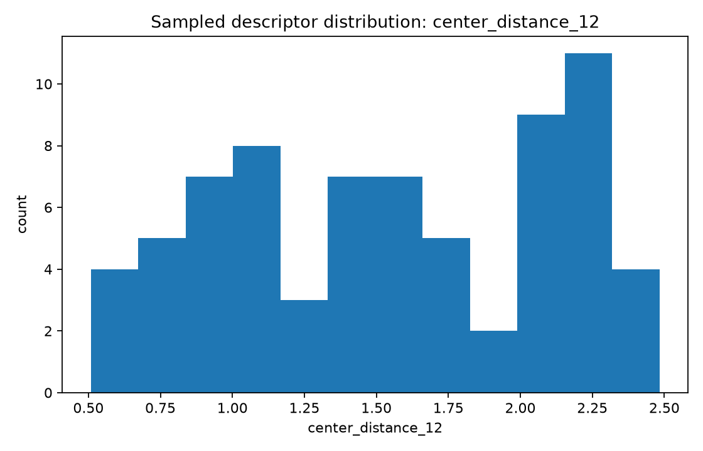
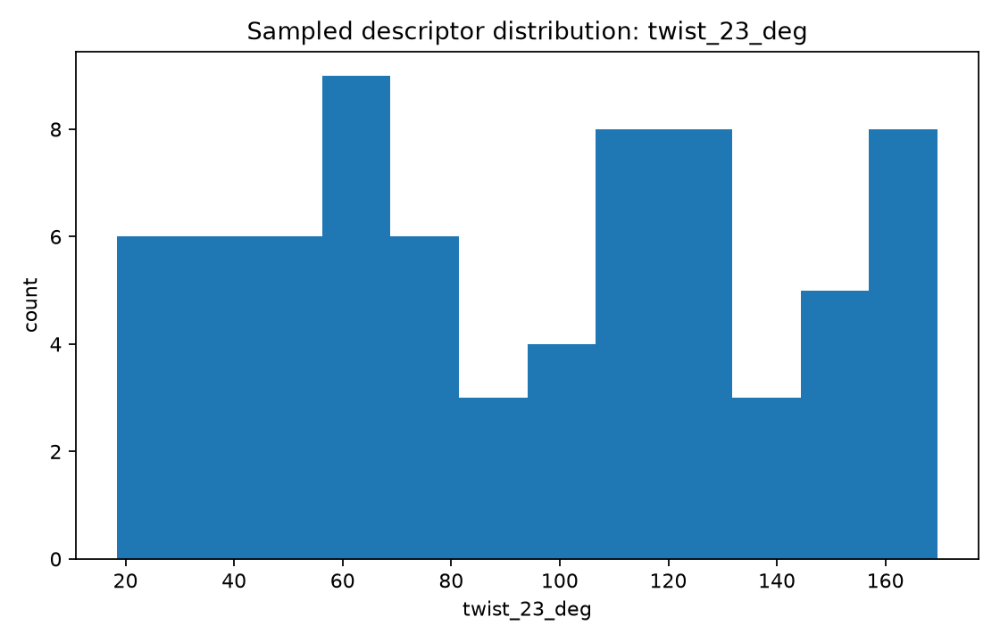
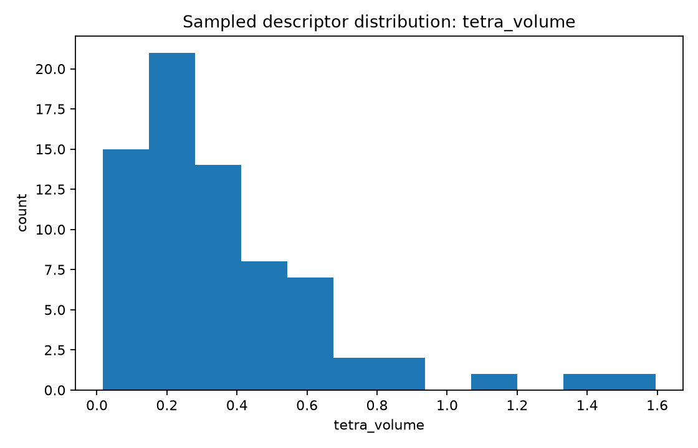

Focus: list a broad parameter inventory, generate initial synthetic geometry instances, and graph several descriptor distributions.
Total samples: 72
center_distance_12 — Normalized adjacent joint-center distance L12/Lrefcenter_distance_23 — Normalized adjacent joint-center distance L23/Lrefcenter_distance_34 — Normalized adjacent joint-center distance L34/Lreftwist_12_deg — Angle between consecutive axes near joints 1 and 2twist_23_deg — Angle between consecutive axes near joints 2 and 3twist_34_deg — Angle between consecutive axes near joints 3 and 4common_normal_13 — Shortest separation between selected nonadjacent axes 1 and 3common_normal_24 — Shortest separation between selected nonadjacent axes 2 and 4offset_1 — Signed offset along axis 1 to a common-normal constructionoffset_2 — Signed offset along axis 2 to a common-normal constructionaxis_to_center_1 — Distance from selected revolute axis 1 to an opposite joint centeraxis_to_center_2 — Distance from selected revolute axis 2 to an opposite joint centertetra_volume — Signed normalized tetrahedral volume built from four reference pointscoplanarity_residual — Near-zero indicates nearly planar center geometrychirality — Right- or left-handed center geometry flaghas_intersection_pair — Boolean flag for exact pairwise axis intersectionhas_mirror_symmetry — Boolean flag for mirror-symmetric construction


| Sample | Family | Seed | L12 | L23 | twist23 | tetra volume |
|---|---|---|---|---|---|---|
| uuur_000 | UUUR | 333335 | 1.651 | 1.087 | 155.8 | 0.163 |
| uuur_001 | UUUR | 9892306 | 0.849 | 2.301 | 39.9 | 0.213 |
| uuur_002 | UUUR | 3325325 | 2.008 | 2.237 | 69.1 | 0.664 |
| uuur_003 | UUUR | 3038653 | 0.747 | 1.407 | 127.1 | 0.317 |
| uuur_004 | UUUR | 187920 | 2.023 | 1.303 | 65.7 | 0.389 |
| uuur_005 | UUUR | 9328378 | 1.617 | 0.837 | 137.3 | 0.368 |
| uuur_006 | UUUR | 2167102 | 1.458 | 1.726 | 55.5 | 0.227 |
| uuur_007 | UUUR | 1873393 | 2.299 | 0.544 | 102.0 | 0.490 |
| uuur_008 | UUUR | 9539878 | 2.029 | 1.991 | 52.7 | 0.594 |
| uuur_009 | UUUR | 9006588 | 1.624 | 2.360 | 169.6 | 0.066 |
| uuur_010 | UUUR | 263301 | 2.483 | 2.481 | 164.1 | 0.192 |
| uuur_011 | UUUR | 7159886 | 2.075 | 1.011 | 152.1 | 0.138 |
| Criterion | Sample | Family | L12 | twist23 | tetra volume |
|---|---|---|---|---|---|
| min center_distance_12 | ursr_004 | URSR | 0.508 | 67.2 | 0.151 |
| max center_distance_12 | uuur_010 | UUUR | 2.483 | 164.1 | 0.192 |
| min twist_23_deg | uruu_000 | URUU | 0.946 | 18.4 | 0.114 |
| max twist_23_deg | uuur_009 | UUUR | 1.624 | 169.6 | 0.066 |
| min tetra_volume | usrr_003 | USRR | 0.815 | 167.4 | 0.018 |
| max tetra_volume | urrs_006 | URRS | 2.130 | 85.1 | 1.595 |